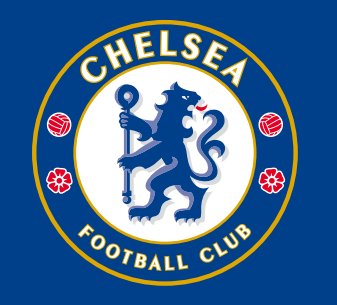
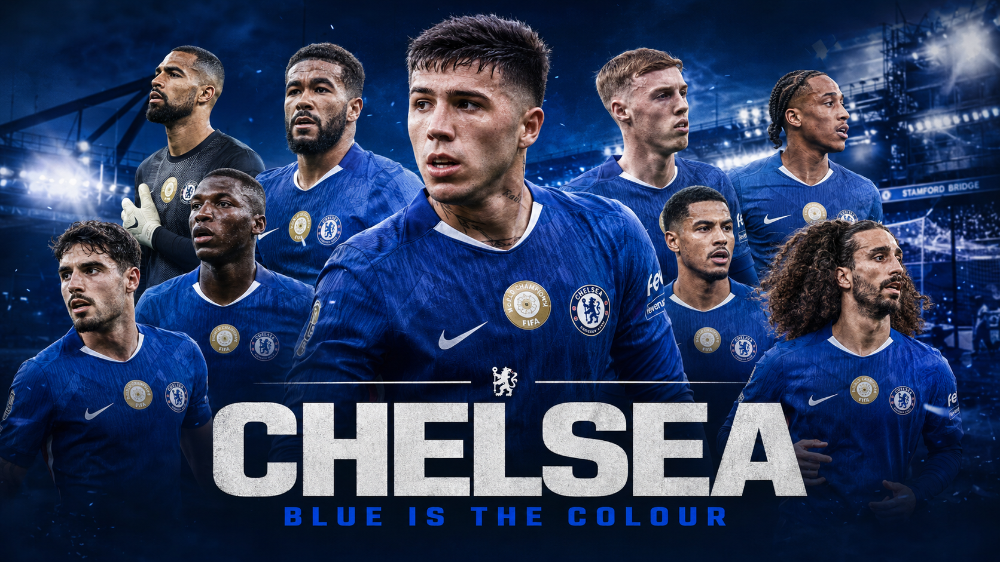

Sunderland v Chelsea
官方预告显示，切尔西将在 2026 年 5 月 24 日英超收官战客场对阵 Sunderland，开球时间为英国时间 16:00。
- 日期
- 5月24日
- 时间
- 23:00 北京
- 场地
- Stadium of Light

Blue Bridge Unofficial Chelsea Journal
最新官方资讯：周日客战 Sunderland · Cobham 备战训练图集更新 · Hato 近期表现获 McFarlane 称赞
Match Intelligence
官方预告显示，切尔西将在 2026 年 5 月 24 日英超收官战客场对阵 Sunderland，开球时间为英国时间 16:00。
Chelsea 击败 Tottenham Hotspur
4,821 位球迷已支持Club Newsroom
球队在 Cobham 继续备战收官战，官方图集记录了周日客战 Sunderland 前的训练状态。
阅读官方资讯Calum McFarlane 称赞 Hato 的成长和韧性，并强调收官战仍需争取三分。
阅读官方资讯官网预告整理了转播、直播、比赛中心和赛后回放信息。
阅读官方资讯Enzo Fernandez 传射建功，Andrey Santos 破门，蓝军在伦敦德比中拿到胜利。
阅读官方战报2025/26 Squad Numbers
Tactical Notes
Enzo Fernandez、Moises Caicedo 与 Andrey Santos 让球队具备传控、覆盖和后插上的多重层次。
Pedro Neto、Malo Gusto、Reece James 与 Marc Cucurella 让两翼既能纵向冲击，也能回收成稳定防线。
Hato、Acheampong、Estevao、Gittens 等年轻球员让球队保持高上限和持续更新的阵容结构。
From The Stands
Carefree, wherever we may be.
Club Identity
Verified Sources